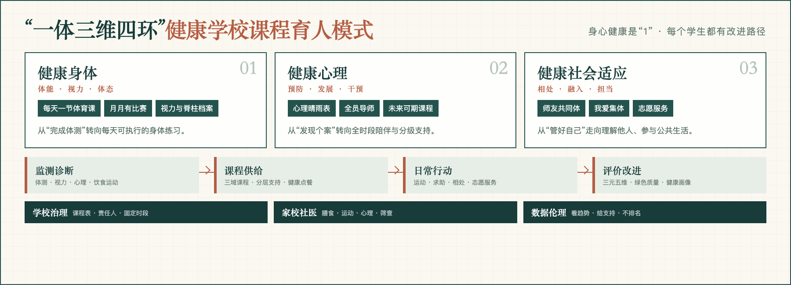

HEALTH FIRST · SCHOOL REDESIGN
健康是“1”每一个学生都有自己的改进路径
如皋市实验初中把“健康第一”从专项活动重构为课程、治理与评价相互支撑的学校实践：先看见每个学生的真实健康处境，再让每一天的课程和环境做出回应。
NATIONAL EDUCATION SCIENCE PROJECT
- 项目负责人
- 丁锦宏
- 项目编号
- BEA230076
- 实践单位
- 如皋市实验初中
- 案例方向
- 坚持健康第一
整全健康
纳入连续管理2023年体质测试识别
一年平均增量从0.8个到接近2个
有效运动时间制度统筹后增加
01
A RESEARCH-INFORMED SCHOOL CASE
健康不是外部约束，
而是学生逐步获得的自我管理能力
案例以全国教育科学规划一般项目“青少年情感教育的内涵、体系和范式研究”为分析框架，以如皋市实验初中为实践单位。
项目关于情感教育的主体生成、关系支持和行动实践的认识，为学校提供了关键判断：学生不会因为一次讲座就形成健康行为；只有在安全关系、真实任务与持续反馈中，健康才能变成会选择、能坚持、愿求助的日常能力。
学校没有停留在“增加一项健康活动”，而是用健康逻辑重构课程：身体、心理和社会适应不是三个独立栏目，而是共同支撑“整全健康”。
从“纠正少数学生的问题”，转向“为每一个学生提供可持续的改进条件”。
02
THE SCHOOL’S PRACTICE MODEL
一体三维四环：
把健康写进学校日常运行

先诊断
体测、视力、脊柱、心理筛查与饮食运动数据形成“健康画像”。
再供给
把突出问题转为可排入课表、有课时和责任人支撑的课程。
促行动
让运动、选餐、求助、同伴交往和志愿服务进入学生每天的生活。
看改进
用“三元五维”和“绿色质量”评价调整课程与治理，不公开健康排名。
03
THREE DIMENSIONS OF HEALTH
三维课程，不是三张清单
01
健康身体
体能 · 视力 · 体态
- 每天一节体育课，“3+2”强基与拓展并行
- “月月有比赛”，课桌操、正脊操、眼球操
- 减脂专窗、营养点餐、体重和体脂记录
- 视力电子档案、脊柱健康筛查、教室光环境检测
02
健康心理
预防 · 发展 · 干预
- 每天润心广播、心理晴雨表、每周心理微课
- 全员导师与“五有好少年”成长规划
- 班级心理委员、每月主题沙龙、学期普查
- ABC分级关爱、“未来可期”个性化课程
03
健康社会适应
相处 · 融入 · 担当
- 师友成长共同体与“暖言善行”
- 班级公约、班徽班歌、共植班级树
- “满天星”志愿服务每学期不少于8次、10小时
- “小委员提案”把公共参与变成真实学习
04
EVIDENCE, NOT SLOGANS
每个数字都带边界，
每个判断都能回到材料
实施与变化2023—2026
以上数字分别对应特定群体或学校制度安排，不代表全体学生同幅变化。90%“未来可期班”转化率仍须核对分子、分母、随访时点及“转化”定义。
《江苏教育研究》
《健康学校建设的问题检视与实践探索》，2026年第8期第18—22页。
减脂专窗与健康课程
央广网、南通日报等对学校减脂专窗、营养点餐、健康学校建设作出报道。
“一个都不能少”
2026年7月，学校以专题报告分享健康学校建设与重点学生关爱经验。
不把传播当成效
公开课、跟岗交流和媒体报道不替代外部单位采用证明；目前不虚构校外推广效果。
05
WHAT CHANGED
“健康第一”真正落到
三个主体身上
从被检查到能管理
会选择食物、安排运动、使用心理晴雨表；愿意求助，也能参与集体与公共事务。
从各管一段到共同负责
体育、心理、德育、总务、医务共享目标；班主任能用健康画像理解学生。
从专项活动到课程治理
健康进入章程、课表、评价、数据与协同机制，形成可追踪的学校运行结构。
06
REVIEW DOSSIER
申报材料下载
PDF · 官方模板
案例申报信息表
含“一体三维四环”模式图与四栏正文。
打开 ↗ PDF · 实践总结身心一体、整全健康
完整说明问题、机制、实施、证据边界与复制条件。
打开 ↗ PDF · 证据册关键数据与来源
将每个数字放回原始材料、统计范围和适用边界。
打开 ↗ XLSX · 可检索完整材料索引
按文件类别、相关性、哈希和口径整理。
下载 ↙FULL ORIGINAL PACKAGE
百度网盘 · 完整原件包
课程表、减重监测、心理关爱、媒体报道、论文和专题视频等完整材料，仅向本次评审定向共享。公开网页不使用学生正脸照片。
健康不是一张体检表，
而是每一个孩子每天可以走的道路。